Punakaiki Rocks
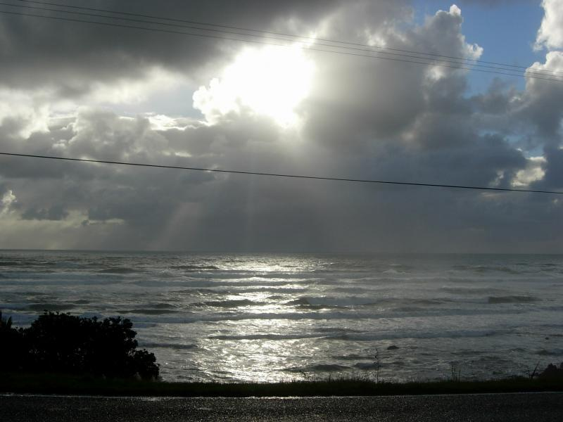
The surf was agitated the afternoon I drove down to Greymouth. Toward sunset, the sky turned pink and the ocean silver. Suddenly, the sky was silver and the ocean, pink. I had a mantra for South Island: "Beyond belief". I kept repeating it while driving. Took over 500 pics, but everything I saw was worth a shot, really.
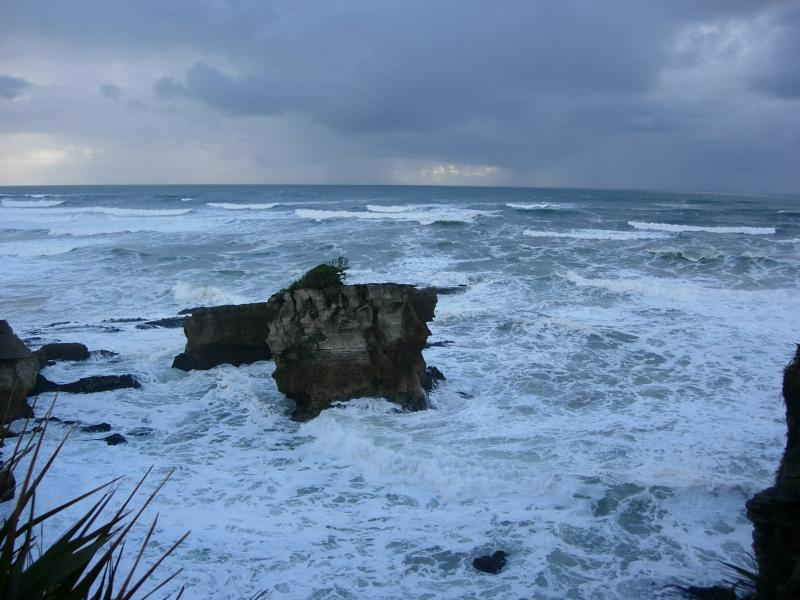
So agitated that 15-yo local vanished by falling off a rock.
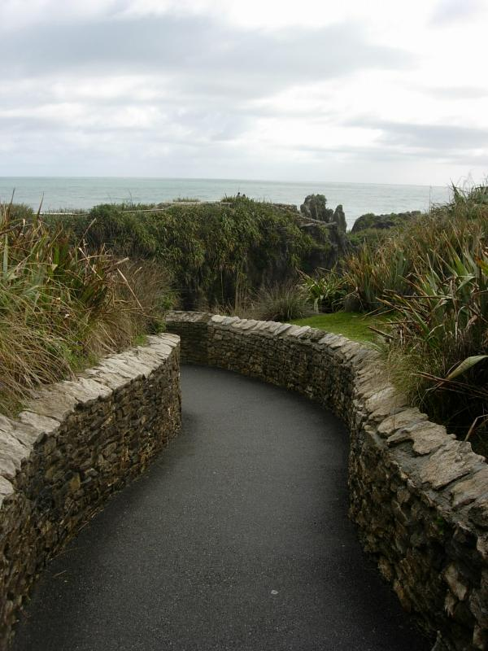
Road to the rocks
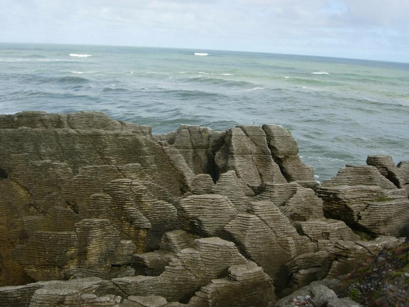
The bottom line is nobody really understands how this happened.
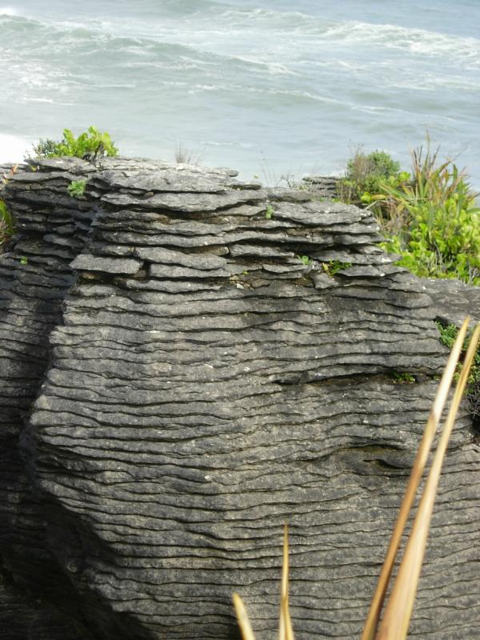
NZ is like Quebec, everything official has to be bilingual. So now you know how to say "Pancake" in Maori.
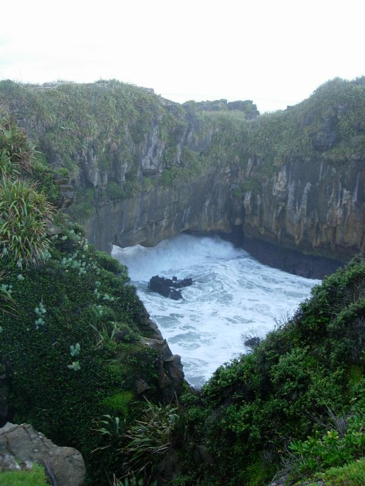
This is a rectangular rock pit. Surf enters/exits through a rectangular hole at on the left. They call this a "blowhole". I think a new word is needed.
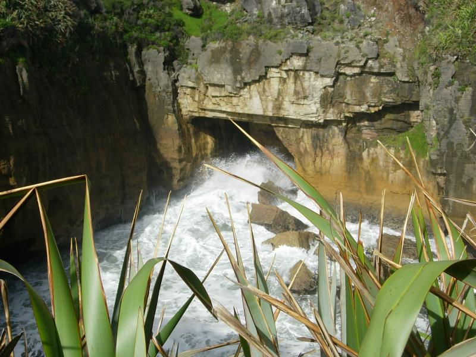
Surf spray above the box (.mov; 6MB)
Surf pounding inside the box (.mov; 8MB)
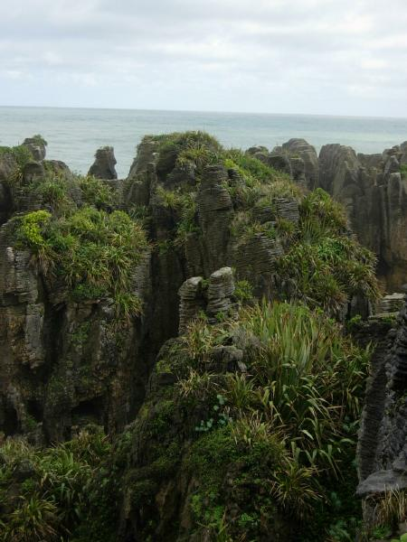
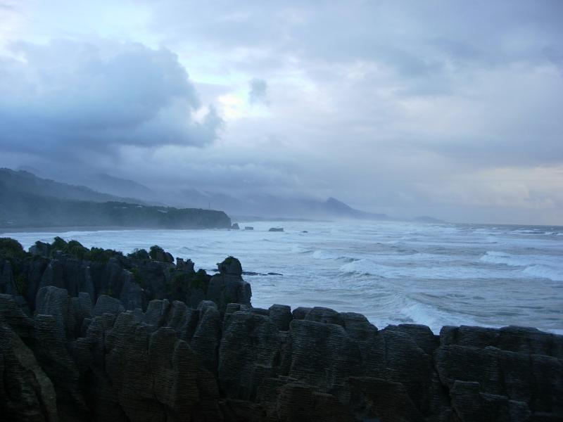
Beach at the End of Truman Track
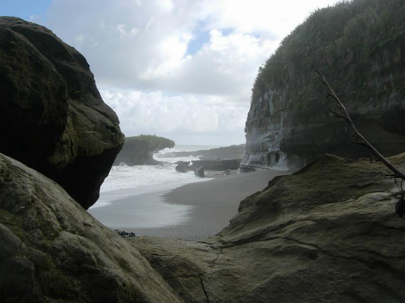
The guide books says everyone stops at the rocks, but no one goes to the beach at the end of nearby Truman Track, and one should, so I did.
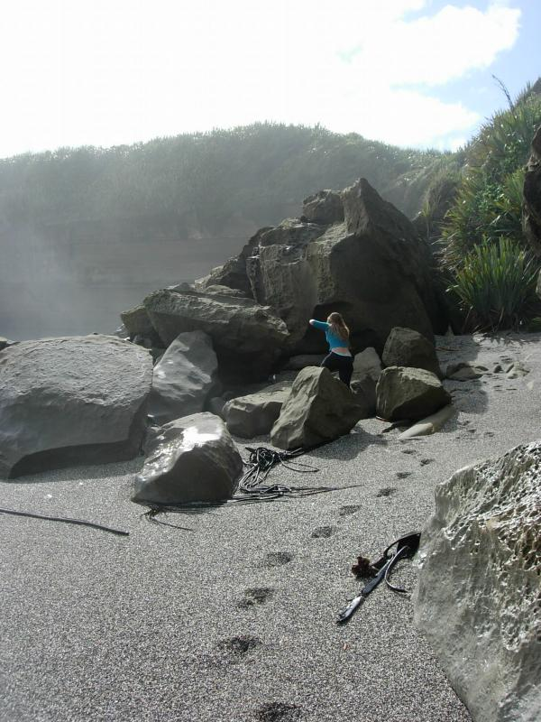
I had to share the beach with another person. Pretty bad by Kiwi standards.
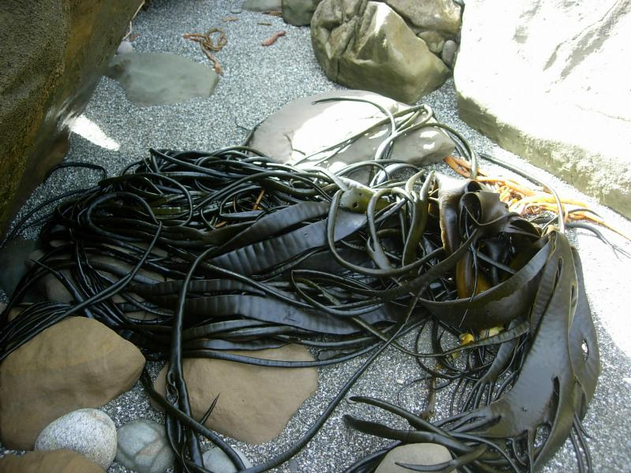
Took one bite from the claw(right) and 10 points of subdual damage.
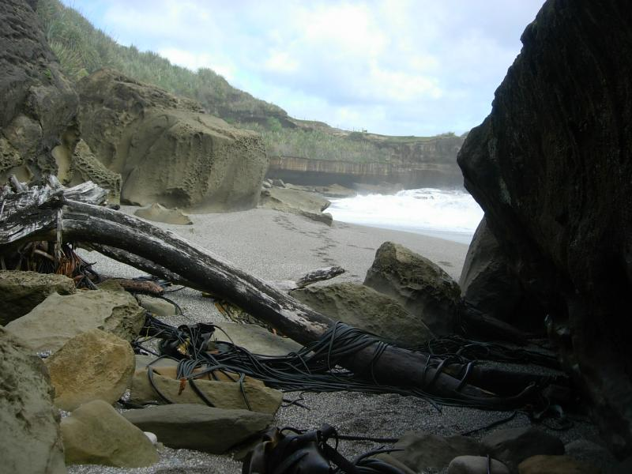
This kind of thing wouldn't be allowed to exist in America--do you know what I mean? There'd be nothing left of it and you'd get charged admission to see a diorama of what used to be there.
Part of it is the mindset that just as all matter can be turned into energy, anything of value can be turned into money, and not only should it be, it's enevitable that it will be, even though the original value is destroyed in the transformation. But even more so, it's pure and simple overpopulation. Oz and Kiwiland are startlingly sparse compared to what I'm used to.
In disgusted moments, I'm waiting for avian flu to figure out how to bind to the glycose receptors in the human throat so it becomes a droplet infection and wipes out 75% of the world population--even if it includes me. (The older I get, the easier it becomes to say things like that. We should send 80-year olds to war.)